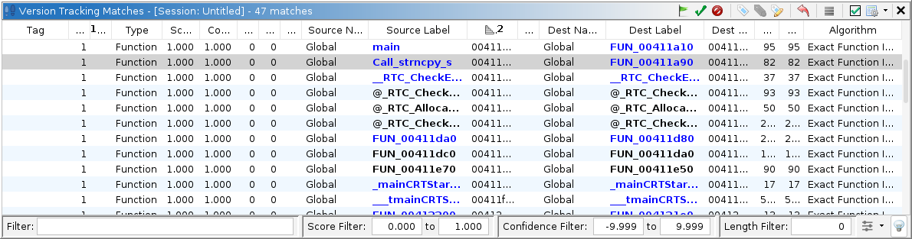

Version Tracking Matches Table
The Version Tracking Matches Table is the primary window for managing a version tracking session. It displays a list of all matches contained in the current session. All other version tracking windows are driven by selecting a match within this table. This window is also the primary means for accepting matches and bulk applying markup items. In addition, this table provides an extensive filtering system.
|  |
Version Tracking Match
A match represents an opinion that a function or data in one program is the equivalent function or data in another program. The pairing of a function or data from one program to another is called an association. There can be multiple matches (opinions) for the same association by one or more correlation algorithms. When a match is considered correct, it should be marked as accepted. When a match is marked as accepted, it is really the association that is accepted and therefore all matches that have the same association are considered accepted. Also, when a match is accepted, all competing matches (matches that have the same source or destination address, but not both) become blocked. For example, if one match has the opinion that A in one program is associated with X in another program and another match has the opinion that A is associated with Y, then accepting the first match, will block the second match since A can't be associated with both X and Y.
Match Status
Each match has a primary status that is one of Available, Accepted, Rejected, or Blocked. In addition, matches that are Accepted have additional status for its markup items. The status column uses overlayed icons to provide information about both types of status. The table below lists the various combined status of a match.


Match Table Columns
Column Name Description Session ID A one-up number for the correlation algorithm run this match belongs to. Tag User-defined text that has been applied to a given match. This can be set from the Choose Tag action. Status The match status. See the section above on Match Status Type Type of match. Either function or data Source Label The label at the source address of this match. Dest Label The label at the destination address of this match. Multiple Source Labels? Icon indicating there is more than one label at the match's source address and a number indicating how many labels. The tooltip can be viewed to see the label names. Multiple Dest Labels? Icon indicating there is more than one label at the match's destination address and a number indicating how many labels. The tooltip can be viewed to see the label names. Score The primary similarity score for this match. The value will be between 0.0 and 1.0. This score indicates how similar two match items are, not necessarily that they are THE correct match. Scores should NOT be compared between different correlator algorithms. Confidence Score A score where higher numbers indicate more confidence that the two items are a match. These numbers have no intrinsic meaning other than higher numbers are better for the same correlator algorithm. Confidence scores should NOT be compared between differrent correlator algorithms. Typically, this number is a combination of the similarity score and some length indicator or the number of duplicate matches. Source Length The length of the source function or data item. Dest Length The length of the destination function or data item. Votes The number of references from from previously accepted matches that would suggest that this is a correct match. Source Address The address of the function or data object in the source program. Destination Address The address of the function or data object in the destination program. Algorithm The algorithm that was used to generate this match. Length Delta The difference in lengths between the source and destination objects. Source Label Type The source of the label in the source program. (Imported, Analysis, User Defined, etc.) Destination Label Type The source of the label in the destination program. (Imported, Analysis, User Defined, etc.) Markup Status Displays an overview of the markup items status. There is a colored orb for each status type and that orb is either colored if at least one markup item has that status or else it is greyed out. An orange orb indicates that one or more markup items have been applied or marked. A green orb indicates at least one markup item has been applied. A purple orb indicates markup items that are rejected. A blue orb indicates there are markup items that have been ignored (either "Don't Know" or "Don't Care". And finally, a red orb indicates that at least one markup item could not be applied due to some error. # Conflicting The number of unique associations with either the same source or same destination address.
This is the number of associations that will become BLOCKED if you accept the match in this row of the table.
Match Table Actions
The Accept Match
action marks a match (and all matches that have the same association) as being accepted. All competing matches will become blocked. There are options to auto-apply function names and create implied matches when accepting a match.
The Apply Blocked Match
action will clear conflicting matches and then apply the match, which had been blocked by those conflicts, and its markup items according to the apply settings.
The Apply Markup
action will attempt to apply all the markup items for the match according to the apply settings. If the match is not already accepted, it will first be marked as accepted.
The Reject Match
action will mark the match as rejected.
The Choose Match Tag
action allows the user to set a user-defined tag that has been created via the Edit Tag action.
The Remove Match Tag
action removes any tag associated with the selected match(es)
The Edit Tag
action allows the user to manage (create and delete) custom tags that can be applied to matches.
The Clear Match
action will reset the match to unaccepted and undo any applied markup.
The Remove Match
action will remove a manually created match from the matches table.
The Make Selections
action will create selections in the source and destination tools for all matches selected in the table.
The Table Selection Mode
allows you to change the behavior of the match table with regard to how it tracks table selections as you apply matches.
As you make changes to a match, the table will update. Sometimes as the table updates the changed match will disappear from the table (for example, if your filter settings are setup to hide applied matches and you have just applied a match). The default behavior (
Table Selection States:
Action Icon Action Name Description Track Selected Index Causes the match table to maintain the selection for the selected row. So, for example, if you change a match, and that match is moved as a result of the table re-sorting, then the selection will remain on the row where the applied match used to be. Track Selected Match Causes the match table to maintain the selection for the selected match. So, for example, if you change a match, and that match is moved as a result of the table re-sorting, then the selection will change to keep the applied match selected. No Selection Tracking In this state the table will not restore selections. If changes are made to matches, the selection will be lost.
The Settings
action will bring up the version tracking accept and apply options.


Match Filters
The match table has an extensive assortment of filters. There are several commonly used filter controls at the bottom of the table:
- Text Filter - allows you to filter based on any text in the table
- Score Filter - allows you to filter on a range of scores. All scores are between 0 and 1
- Confidence Filter - allows you to filter a range of confidence values. All confidence values will be greater than -9.999 and smaller than 9.999.
- Length Filter - is used to filter out functions that are smaller than some number
Finally, the
will show the ancillary filters available. The table below lists and describes the available filters. When an ancillary filter is applied, the icon will change to
. Further, the icon may occasionally flash as a reminder that there is a filter applied.
Filter Name Description Match Type This filter allows the user to show only function or data matches. Association Status This filter allows the user to show only matches whose assocation has one of the included status types. A useful setting for this filter is to turn off all but the Available status. This will cause the table to act like a "To Do" list. Symbol Type This filter allows the user to show only matches whose source or destination labels are of one of the included symbol types. Algorithms This filter allows the user to show only matches that were generated by one of the included types of correlating algorithms Address Range This filter allows the user to show only matches whose source or destination address is within the specified range. Tags This filter allows the user to show only matches whose tag is an included tag.